Co nowego
Zmiany w ostatnich wersjach Pit Wall Crew.
Wersja 0.4.3.37 (12.11.2026)
NOWECel jazdy: „Najlepszy czas” albo „Tempo wyścigowe” (endurance, funkcja eksperymentalna) – raport daje wskazówki pod najlepsze okrążenie albo pod średnie tempo i zużycie opon; przełącznik na stronie Inżynier i głosem.
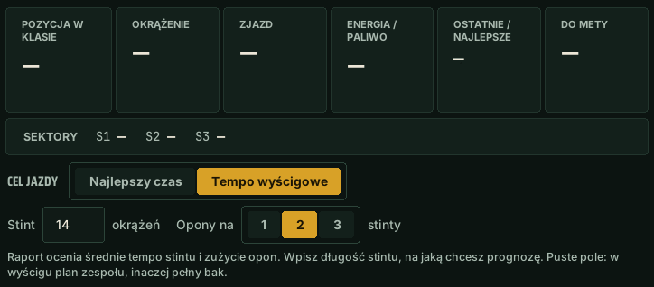
NOWERaport z jazdy: karta „Od ostatniego razu” (porównanie z poprzednią albo wybraną jazdą na tym torze tym autem), „Zapytaj o ten raport” (też głosem: „co z raportu?”), filtr toru i auta, „Usuń raport”, prostsze opisy „Na następny stint”.
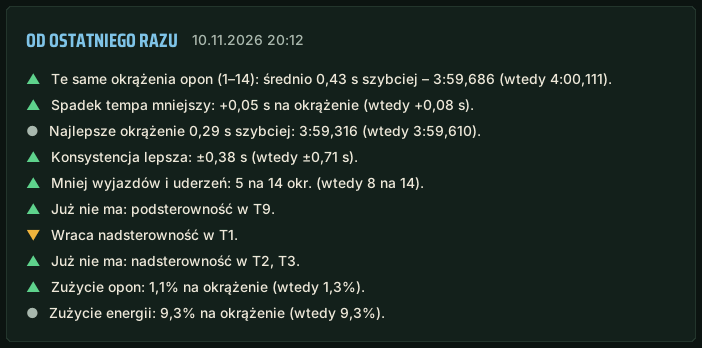
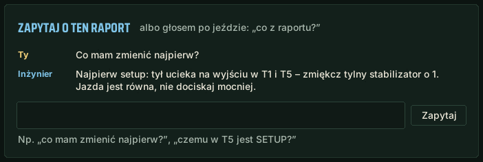
NOWE„Co nowego” w oknie i na pit wallu: zrzuty nowych funkcji – widać, gdzie są i jak wyglądają.
NOWEJazda na długi stint: zapytaj „jak oszczędzać opony?” – inżynier poda zasady z Twoich danych; przy celu „Tempo wyścigowe” nie porównuje już zakrętów z najlepszym okrążeniem.
NOWETempo wyścigowe (funkcja eksperymentalna): długość stintu i opony na 1–3 stinty (strona Inżynier albo głosem) – raport liczy spadek tempa i prognozę na komplet opon.
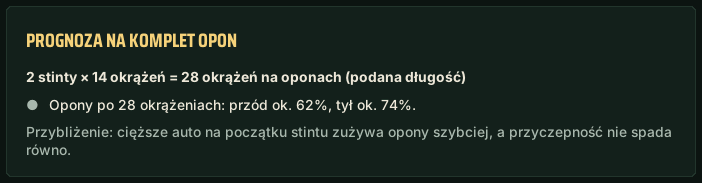
POPRAWKARaport z jazdy: „Konsystencja” zamiast „Równość” (też na pit wallu), jedno zdanie zamiast powtórzeń przy tej samej wadzie auta, porównania tylko podobnych jazd, rady w języku programu, „podsumowanie stintu” odświeża bieżący raport.
POPRAWKAAI: krótsze pytania do Groqa – rzadziej „limit wyczerpany”; inżynier mówi, czy to limit na minutę, czy dzienny.
POPRAWKAAssetto Corsa: dokładniejsze rady AI o setupie (amortyzatory, dobijanie, prześwit, camber, hamulce).
POPRAWKAOkno aktualizacji: lista zmian w języku programu.
POPRAWKARada o ciśnieniach przy zmianie temperatury toru (noc, poranek) znów działa.
Wersja 0.4.3.36 (12.11.2026)
NOWERaport z jazdy: przycisk do porównania przejazdu z kolegą na pit wallu.
POPRAWKAMapa toru znów zbiera dokładny kształt toru i wysyła go zespołowi.
POPRAWKA„Jaka strata?” – odstęp do auta przed i za Tobą (poza wyścigiem: czasy okrążeń), bez pytania AI.
Wersja 0.4.3.35 (11.11.2026)
NOWERaport z jazdy w demo: karta z tym, co z tej jazdy pokazałaby pełna wersja.
NOWE„Jak zrobiłem fioletowy sektor?” – co w najlepszym sektorze albo okrążeniu poszło lepiej niż zwykle.
POPRAWKAMikrofon: gdy słuchawki włączysz po starcie programu, inżynier sam przełącza się na nie z mikrofonu laptopa.
POPRAWKARaport z jazdy: poprawne nazwy szykan w radach o setupie, bez powtórzeń.
Wersja 0.4.3.34 (11.11.2026)
NOWEOstrzeżenie, gdy w garażu zmienisz ustawienie odwrotnie niż w radzie.
POPRAWKARady o setupie nie powtarzają się w kółko.
Wersja 0.4.3.33 (11.11.2026)
NOWEPit wall: dokładny kształt toru (co 4 m) od pierwszego kierowcy zespołu, który przejedzie tor.
Wersja 0.4.3.32 (11.11.2026)
NOWEZespół: te same numery zakrętów u wszystkich kierowców – na pit wallu i w raportach.
POPRAWKAMapka w raporcie: dokładny kształt toru z Twojego auta (szykany nie są już proste), kropka 2 razy wolniej.
POPRAWKARaport z jazdy: przy mniej niż 4 czystych okrążeniach też widać PS / NS i SETUP.
POPRAWKARaport z jazdy: bez rady „wcześniej gaz”, gdy wyjście było w pełnym gazie aż do hamowania przed następnym zakrętem.
POPRAWKARaport z jazdy: informacja, ilu czystych okrążeń zabrakło do pewnych rad o setupie.
POPRAWKARaport z jazdy: w szczegółach zakrętu jeden pasek przyczepności na fazę.
Wersja 0.4.3.31 (11.11.2026)
NOWERaport z jazdy: rada przy każdej fazie zakrętu (szybsze wejście, więcej gazu czy granica).
NOWERaport z jazdy: szykana liczona jako jeden zakręt.
NOWETrener: gwałtowne puszczanie hamulca, dwa hamowania, korekty kierownicą i wahanie na gazie.
NOWETrener: przy powtarzającym się blokowaniu – ćwiczenie hamowania na mniejszej sile.
NOWERaport z jazdy: kiedy oddać zakręt, żeby szybciej wyjść z następnego.
POPRAWKAW kwalifikacjach i treningu inżynier mówi o zjeździe okrążenie wcześniej, gdy energii starczy tylko na jedno.
POPRAWKAPozycje mówione słowami: „na piątej pozycji” zamiast „P pięć”.
POPRAWKAAwans przez pitstop rywala: „Kowalski zjechał do boksu, P4”.
POPRAWKARaport z jazdy: mapka przybliża wybrany zakręt, kropka jedzie płynnie.
POPRAWKARaport z jazdy wygląda jak w projekcie: zaokrąglone plakietki, opony i wykres.
POPRAWKAPierwsze okrążenie wyścigu liczy się w raporcie i w spalaniu.
POPRAWKAOpony w raporcie: ramka oznacza przegrzanie, a nie najszybsze zużycie.
POPRAWKAZagięcie prostej przejechane w pełnym gazie, z zapasem przyczepności, nie jest już zakrętem.
Wersja 0.4.3.30 (11.11.2026)
NOWERady odnośnie grzania i chłodzenia opon.
NOWEOstrzeżenie o przegrzewaniu opon w czasie jazdy.
NOWEPojedynek z rywalem: „pilnuj Kowalskiego”.
POPRAWKAPytania „żeby tył mniej się ślizgał” trafiają do rady o balansie.
POPRAWKA„Hamulce się przegrzewają” – odpowiedź o hamulcach z radą, a nie o silniku.
Wersja 0.4.3.29 (10.11.2026)
POPRAWKASpotter w LMU reaguje szybciej (dane z telemetrii).
Wersja 0.4.3.28 (10.11.2026)
NOWE„Co było w T5?” – ostatni przejazd zakrętu na tle najlepszego.
NOWENotatki głosowe („notatka: …”) w raporcie z jazdy.
NOWE„Gdzie na torze jest Kowalski?” – zakręt, w którym jest rywal.
NOWEPit wall: wygląd bliższy programowi.
POPRAWKAKomendy z listy działają w każdym języku bez klucza Groq.
POPRAWKABez klucza Groq inżynier nie odpowiada po polsku w innych językach.
POPRAWKARaport: w „Zmień w setupie” tylko zmiany w aucie.
POPRAWKAOdstęp do rywala w wyścigu taki sam, jak pokazuje gra.
POPRAWKA„Czy mnie dogoni?” – poprawne tempo rywala.
POPRAWKAPit wall: „TERAZ” nie zasłania stintu, grafik mieści się na telefonie.
POPRAWKA„Lewa przednia 140”, „TC?” i „ABS?” działają bez AI.
What's new
Changes in the latest Pit Wall Crew versions.
Version 0.4.3.37 (12.11.2026)
NEWDriving goal: “Best lap time” or “Race pace” (endurance, experimental feature) – the report gives tips for your best lap or for average pace and tyre wear; a switch on the Engineer page and by voice.
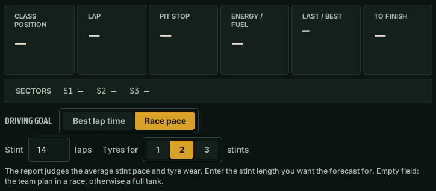
NEWDriving report: “Since last time” card (a comparison with your previous or a chosen run on this track in this car), “Ask about this report” (also by voice: “what's in the report?”), track and car filter, “Delete report”, simpler “Next stint” descriptions.
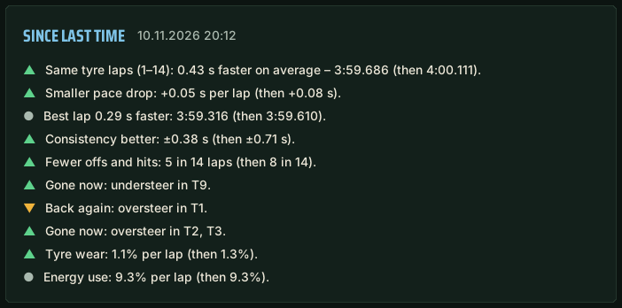
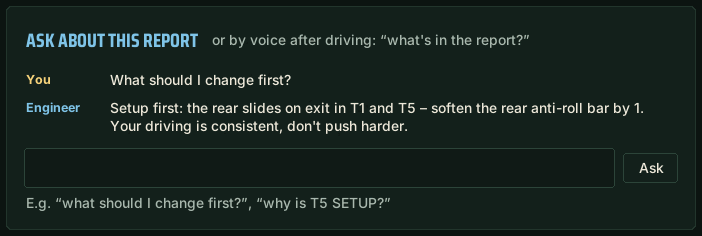
NEW“What's new” in the window and on the Pit Wall: screenshots of new features – you see where they are and how they look.
NEWLong-stint driving: ask “how do I save the tyres?” – the engineer gives rules from your data; with the “Race pace” goal it no longer compares corners with your best lap.
NEWRace pace (experimental feature): stint length and tyres for 1–3 stints (Engineer page or by voice) – the report works out the pace drop and a forecast for the tyre set.
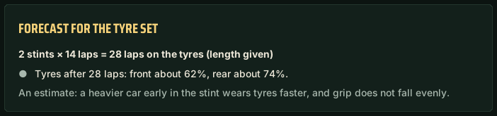
FIXDriving report: one “Consistency” label (also on the Pit Wall), one sentence instead of repeats for the same car issue, comparisons only between similar runs, advice in the program's language, “stint summary” refreshes the live report.
FIXAI: shorter requests to Groq – fewer “limit reached”; the engineer says whether it is the per-minute or the daily limit.
FIXAssetto Corsa: more detailed AI setup advice (dampers, bottoming, ride height, camber, brakes).
FIXUpdate prompt: the list of changes in the program's language.
FIXPressure advice when the track temperature changes (night, morning) works again.
Version 0.4.3.36 (12.11.2026)
NEWDriving report: a button to compare your run with a teammate on the Pit Wall.
FIXThe track map collects the accurate track shape and sends it to the team again.
FIX“What's the gap?” – gap to the cars ahead and behind (outside the race: lap times), without asking the AI.
Version 0.4.3.35 (11.11.2026)
NEWDemo driving report: a card showing what the full version would add from this drive.
NEW“How did I do that purple sector?” – what went better than usual in your best sector or lap.
FIXMicrophone: if you turn on your headset after starting the app, the engineer switches to it from the laptop mic.
FIXDriving report: correct chicane names in setup advice, no repeats.
Version 0.4.3.34 (11.11.2026)
NEWWarning when you change a setting in the garage the opposite way to the advice.
FIXSetup advice no longer repeats in circles.
Version 0.4.3.33 (11.11.2026)
NEWPit Wall: exact track shape (every 4 m) from the first team driver to lap the track.
Version 0.4.3.32 (11.11.2026)
NEWTeam: the same corner numbers for every driver – on the Pit Wall and in reports.
FIXReport map: exact track shape from your car (chicanes no longer look straight), the dot moves 2× slower.
FIXDriving report: PS / NS and SETUP also shown with fewer than 4 clean laps.
FIXDriving report: no “throttle earlier” advice when the exit was flat out until braking for the next corner.
FIXDriving report: shows how many clean laps were missing for certain setup advice.
FIXDriving report: corner details show one grip bar per phase.
Version 0.4.3.31 (11.11.2026)
NEWDriving report: advice for every corner phase (faster entry, more throttle or at the limit).
NEWDriving report: a chicane counts as one corner.
NEWCoach: abrupt brake release, braking twice, steering corrections and throttle hesitation.
NEWCoach: with repeated lock-ups – a drill to brake with less force.
NEWDriving report: when to give up a corner to get out of the next one faster.
FIXIn qualifying and practice the engineer calls the pit stop a lap earlier when energy lasts only one more lap.
FIXPit stop of the car ahead is announced: “Kowalski pitted, P4”.
FIXDriving report: the map zooms in on the selected corner and the dot moves smoothly.
FIXDriving report looks like the design: rounded badges, tyres and chart.
FIXThe first race lap counts in the report and in consumption.
FIXTyres in the report: the outline means overheating, not the fastest wear.
FIXPolish voice: positions spoken as words.
FIXA kink on a straight taken flat out, with grip to spare, no longer counts as a corner.
Version 0.4.3.30 (11.11.2026)
NEWAdvice on warming up and cooling down tyres.
NEWWarning about overheating tyres while driving.
NEWDuel with a rival: “watch Smith”.
FIX“So the rear slides less” questions get balance advice.
FIX“Brakes are overheating” – an answer about brakes with advice, not about the engine.
Version 0.4.3.29 (10.11.2026)
FIXThe spotter in LMU reacts faster (telemetry data).
Version 0.4.3.28 (10.11.2026)
NEW“What happened in T5?” – your last pass through a corner against your best.
NEWVoice notes (“note: …”) in the driving report.
NEW“Where on track is Smith?” – the corner the rival is in.
NEWPit wall: looks closer to the app.
FIXListed commands work in every language without a Groq key.
FIXWithout a Groq key the engineer no longer answers in Polish in other languages.
FIXReport: “Change in the setup” has car changes only.
FIXThe gap to a rival in a race matches what the game shows.
FIX“Will he catch me?” – correct rival pace.
FIXPit wall: “NOW” no longer covers the stint, the schedule fits on phones.
FIX“Left front 140”, “TC?” and “ABS?” work without AI.
Was ist neu
Änderungen in den letzten Versionen von Pit Wall Crew.
Version 0.4.3.37 (12.11.2026)
NEUFahrziel: „Beste Zeit“ oder „Renntempo“ (Langstrecke, experimentelle Funktion) – der Bericht gibt Tipps für die beste Runde oder für Durchschnittstempo und Reifenverschleiß; Schalter auf der Seite Ingenieur und per Stimme.
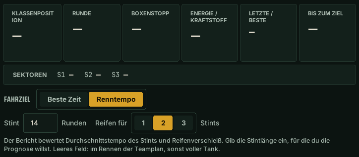
NEUFahrbericht: Karte „Seit dem letzten Mal“ (Vergleich mit der vorigen oder einer gewählten Fahrt auf dieser Strecke mit diesem Auto), „Frag zu diesem Bericht“ (auch per Stimme: „was steht im Bericht?“), Filter Strecke und Auto, „Bericht löschen“, einfachere Texte bei „Nächster Stint“.
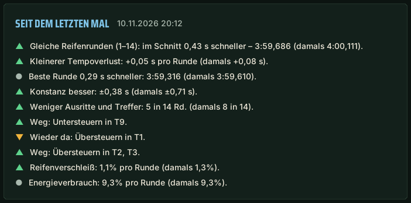
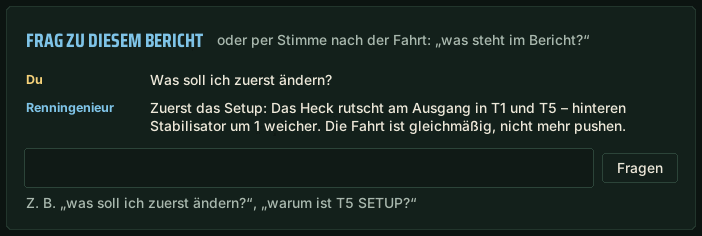
NEU„Was ist neu“ im Fenster und auf der Pit Wall: Screenshots neuer Funktionen – du siehst, wo sie sind und wie sie aussehen.
NEULanger Stint: frag „wie schone ich die Reifen?“ – der Ingenieur nennt Regeln aus deinen Daten; beim Ziel „Renntempo“ vergleicht er keine Kurven mehr mit der besten Runde.
NEURenntempo (experimentelle Funktion): Stintlänge und Reifen für 1–3 Stints (Seite Ingenieur oder per Stimme) – der Bericht rechnet Tempoverlust und Prognose für den Reifensatz.
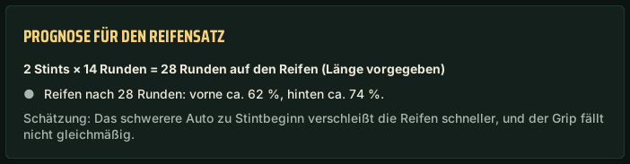
KORREKTURFahrbericht: einheitlich „Konstanz“ (auch auf der Pit Wall), ein Satz statt Wiederholungen bei derselben Fahrzeugschwäche, Vergleiche nur ähnlicher Fahrten, Tipps in der Programmsprache, „Stint-Zusammenfassung“ aktualisiert den Live-Bericht.
KORREKTURKI: kürzere Anfragen an Groq – seltener „Limit erreicht“; der Ingenieur sagt, ob es das Minuten- oder das Tageslimit ist.
KORREKTURAssetto Corsa: genauere KI-Setup-Tipps (Dämpfer, Aufsetzen, Bodenfreiheit, Sturz, Bremsen).
KORREKTURUpdate-Abfrage: Änderungsliste in der Programmsprache.
KORREKTURDer Drucktipp bei geänderter Streckentemperatur (Nacht, Morgen) funktioniert wieder.
Version 0.4.3.36 (12.11.2026)
NEUFahrbericht: Schaltfläche zum Vergleich deiner Fahrt mit einem Teamkollegen auf der Pit Wall.
KORREKTURDie Streckenkarte erfasst wieder die genaue Streckenform und sendet sie ans Team.
KORREKTUR„Wie groß ist der Abstand?“ – Abstand zum Auto vor und hinter dir (außerhalb des Rennens: Rundenzeiten), ohne KI.
Version 0.4.3.35 (11.11.2026)
NEUFahrbericht in der Demo: Karte mit dem, was die Vollversion aus dieser Fahrt zeigen würde.
NEU„Wie habe ich den lila Sektor gemacht?“ – was im besten Sektor oder in der besten Runde besser lief als sonst.
KORREKTURMikrofon: Schaltest du das Headset erst nach dem Start ein, wechselt der Ingenieur selbst vom Laptop-Mikrofon dorthin.
KORREKTURFahrbericht: richtige Schikanennamen in Setup-Tipps, ohne Wiederholungen.
Version 0.4.3.34 (11.11.2026)
NEUWarnung, wenn du eine Einstellung in der Garage entgegen dem Tipp änderst.
KORREKTURSetup-Tipps wiederholen sich nicht mehr im Kreis.
Version 0.4.3.33 (11.11.2026)
NEUPit Wall: genaue Streckenform (alle 4 m) vom ersten Teamfahrer, der die Strecke fährt.
Version 0.4.3.32 (11.11.2026)
NEUTeam: gleiche Kurvennummern bei allen Fahrern – auf der Pit Wall und in Berichten.
KORREKTURKarte im Bericht: genaue Streckenform aus deinem Auto (Schikanen nicht mehr gerade), der Punkt fährt halb so schnell.
KORREKTURFahrbericht: PS / NS und SETUP auch bei weniger als 4 sauberen Runden.
KORREKTURFahrbericht: kein „früher Gas“, wenn der Ausgang bis zum Bremsen für die nächste Kurve voll gefahren wurde.
KORREKTURFahrbericht: zeigt, wie viele saubere Runden für sichere Setup-Tipps fehlten.
KORREKTURFahrbericht: in den Kurvendetails ein Grip-Balken pro Phase.
Version 0.4.3.31 (11.11.2026)
NEUFahrbericht: Tipp für jede Kurvenphase (schneller einfahren, mehr Gas oder am Limit).
NEUFahrbericht: Eine Schikane zählt als eine Kurve.
NEUCoach: abruptes Lösen der Bremse, zweimal Bremsen, Lenkkorrekturen und Zögern am Gas.
NEUCoach: bei wiederholtem Blockieren – Übung, mit weniger Kraft zu bremsen.
NEUFahrbericht: wann du eine Kurve opferst, um schneller aus der nächsten zu kommen.
KORREKTURIn Qualifying und Training sagt der Renningenieur den Boxenstopp eine Runde früher an, wenn die Energie nur noch für eine Runde reicht.
KORREKTURBoxenstopp des Vordermanns wird angesagt: „Kowalski ist in die Box gefahren, P4“.
KORREKTURFahrbericht: Die Karte zoomt auf die gewählte Kurve, der Punkt fährt flüssig.
KORREKTURFahrbericht wie im Entwurf: abgerundete Plaketten, Reifen und Diagramm.
KORREKTURDie erste Rennrunde zählt im Bericht und beim Verbrauch.
KORREKTURReifen im Bericht: Der Rahmen bedeutet Überhitzung, nicht den schnellsten Verschleiß.
KORREKTURPolnische Stimme: Positionen als Wörter gesprochen.
KORREKTUREin Knick auf der Geraden, voll und mit Grip-Reserve gefahren, zählt nicht mehr als Kurve.
Version 0.4.3.30 (11.11.2026)
NEUTipps zum Aufwärmen und Abkühlen der Reifen.
NEUWarnung vor überhitzten Reifen während der Fahrt.
NEUDuell mit einem Gegner: „beobachte Müller“.
KORREKTURFragen wie „damit das Heck weniger rutscht“ bekommen einen Balance-Tipp.
KORREKTUR„Bremsen überhitzen“ – Antwort zu den Bremsen mit Tipp, nicht zum Motor.
Version 0.4.3.29 (10.11.2026)
KORREKTURDer Spotter in LMU reagiert schneller (Telemetriedaten).
Version 0.4.3.28 (10.11.2026)
NEU„Was war in T5?“ – die letzte Durchfahrt im Vergleich zur besten.
NEUSprachnotizen („Notiz: …“) im Fahrbericht.
NEU„Wo auf der Strecke ist Müller?“ – die Kurve, in der der Gegner ist.
NEUPit Wall: Aussehen näher am Programm.
KORREKTURBefehle aus der Liste funktionieren in jeder Sprache ohne Groq-Schlüssel.
KORREKTUROhne Groq-Schlüssel antwortet der Ingenieur in anderen Sprachen nicht mehr auf Polnisch.
KORREKTURBericht: „Im Setup ändern“ enthält nur Änderungen am Auto.
KORREKTURDer Abstand zum Gegner im Rennen stimmt mit der Anzeige im Spiel überein.
KORREKTUR„Holt er mich ein?“ – richtiges Tempo des Gegners.
KORREKTURPit Wall: „JETZT“ verdeckt den Stint nicht mehr, der Zeitplan passt aufs Handy.
KORREKTUR„Vorne links 140“, „TC?“ und „ABS?“ funktionieren ohne KI.
Nouveautés
Changements des dernières versions de Pit Wall Crew.
Version 0.4.3.37 (12.11.2026)
NOUVEAUObjectif : « Meilleur temps » ou « Rythme de course » (endurance, fonction expérimentale) – le rapport donne des conseils pour le meilleur tour ou pour le rythme moyen et l'usure des pneus ; sélecteur sur la page Ingénieur et à la voix.
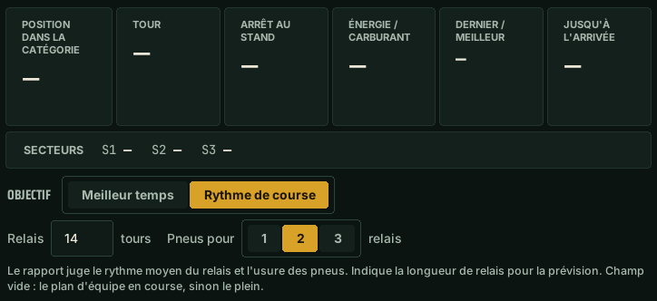
NOUVEAURapport de roulage : carte « Depuis la dernière fois » (comparaison avec la session précédente ou choisie sur ce circuit avec cette voiture), « Demander sur ce rapport » (aussi à la voix : « quoi dans le rapport ? »), filtre circuit et voiture, « Supprimer le rapport », descriptions plus simples dans « Prochain relais ».
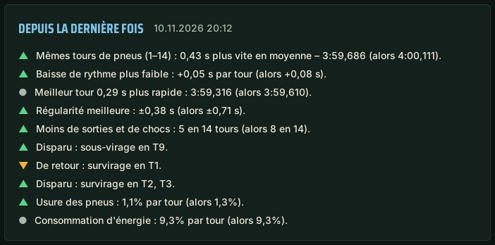
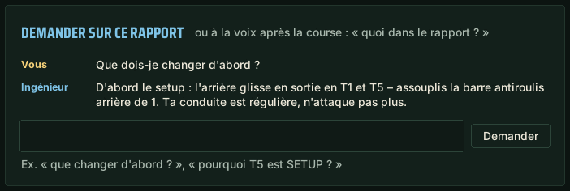
NOUVEAU« Nouveautés » dans la fenêtre et sur le Pit Wall : captures des nouvelles fonctions – on voit où elles sont et à quoi elles ressemblent.
NOUVEAULong relais : demande « comment préserver les pneus ? » – l'ingénieur donne les règles d'après tes données ; avec l'objectif « Rythme de course », il ne compare plus les virages au meilleur tour.
NOUVEAURythme de course (fonction expérimentale) : longueur du relais et pneus pour 1 à 3 relais (page Ingénieur ou à la voix) – le rapport calcule la baisse de rythme et une prévision pour le train de pneus.
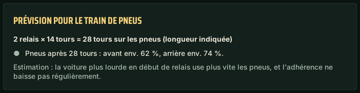
CORRECTIONRapport de roulage : libellé « Régularité » partout (aussi sur le Pit Wall), une phrase au lieu de répétitions pour le même défaut de la voiture, comparaisons seulement entre sessions semblables, conseils dans la langue du programme, « résumé du relais » met à jour le rapport en direct.
CORRECTIONIA : requêtes plus courtes vers Groq – moins de « limite atteinte » ; l’ingénieur dit s’il s’agit de la limite par minute ou quotidienne.
CORRECTIONAssetto Corsa : conseils de setup de l’IA plus précis (amortisseurs, talonnage, garde au sol, carrossage, freins).
CORRECTIONFenêtre de mise à jour : liste des changements dans la langue du programme.
CORRECTIONLe conseil de pression quand la température de piste change (nuit, matin) fonctionne à nouveau.
Version 0.4.3.36 (12.11.2026)
NOUVEAURapport de conduite : bouton pour comparer ton passage avec un coéquipier sur le Pit Wall.
CORRECTIONLa carte du circuit enregistre de nouveau le tracé précis et l’envoie à l’équipe.
CORRECTION« Quel écart ? » – écart avec les voitures devant et derrière (hors course : temps au tour), sans passer par l’IA.
Version 0.4.3.35 (11.11.2026)
NOUVEAURapport de conduite en démo : une carte avec ce que la version complète montrerait de cette session.
NOUVEAU« Comment j’ai fait ce secteur violet ? » – ce qui a mieux marché que d’habitude dans ton meilleur secteur ou tour.
CORRECTIONMicro : si tu allumes ton casque après le lancement, l’ingénieur bascule tout seul depuis le micro du portable.
CORRECTIONRapport de conduite : noms de chicanes corrects dans les conseils de réglage, sans répétitions.
Version 0.4.3.34 (11.11.2026)
NOUVEAUAvertissement quand tu changes un réglage au garage dans le sens inverse du conseil.
CORRECTIONLes conseils de réglage ne tournent plus en rond.
Version 0.4.3.33 (11.11.2026)
NOUVEAUPit Wall : forme exacte du circuit (tous les 4 m) du premier pilote de l’équipe qui fait un tour.
Version 0.4.3.32 (11.11.2026)
NOUVEAUÉquipe : mêmes numéros de virages pour tous les pilotes – sur le Pit Wall et dans les rapports.
CORRECTIONCarte du rapport : forme exacte du circuit d’après ta voiture (les chicanes ne sont plus droites), le point va 2 fois moins vite.
CORRECTIONRapport de conduite : PS / NS et SETUP aussi avec moins de 4 tours propres.
CORRECTIONRapport de conduite : plus de conseil « accélère plus tôt » quand la sortie était à fond jusqu’au freinage du virage suivant.
CORRECTIONRapport de conduite : indique combien de tours propres manquaient pour des conseils de réglage sûrs.
CORRECTIONRapport de conduite : une seule barre d’adhérence par phase dans le détail du virage.
Version 0.4.3.31 (11.11.2026)
NOUVEAURapport de conduite : un conseil pour chaque phase du virage (entrer plus vite, accélérer plus ou à la limite).
NOUVEAURapport de conduite : une chicane compte comme un seul virage.
NOUVEAUCoach : frein relâché brusquement, double freinage, corrections au volant et hésitation à l’accélérateur.
NOUVEAUCoach : en cas de blocages répétés – exercice de freinage avec moins de force.
NOUVEAURapport de conduite : quand sacrifier un virage pour sortir plus vite du suivant.
CORRECTIONEn qualification et en essais, l’ingénieur annonce le passage aux stands un tour plus tôt quand l’énergie ne suffit plus que pour un tour.
CORRECTIONArrêt aux stands de la voiture devant annoncé : « Kowalski est rentré aux stands, P4 ».
CORRECTIONRapport de conduite : la carte zoome sur le virage choisi et le point se déplace en douceur.
CORRECTIONLe rapport de conduite suit la maquette : badges arrondis, pneus et graphique.
CORRECTIONLe premier tour de course compte dans le rapport et la consommation.
CORRECTIONPneus dans le rapport : le contour signale la surchauffe, pas l’usure la plus rapide.
CORRECTIONVoix polonaise : positions dites en toutes lettres.
CORRECTIONUne courbe de ligne droite passée à fond, avec de la marge d’adhérence, ne compte plus comme un virage.
Version 0.4.3.30 (11.11.2026)
NOUVEAUConseils pour chauffer et refroidir les pneus.
NOUVEAUAlerte de surchauffe des pneus en roulant.
NOUVEAUDuel avec un rival : « surveille Dupont ».
CORRECTIONLes questions « pour que l'arrière glisse moins » reçoivent un conseil d'équilibre.
CORRECTION« Les freins surchauffent » – réponse sur les freins avec un conseil, pas sur le moteur.
Version 0.4.3.29 (10.11.2026)
CORRECTIONLe spotter dans LMU réagit plus vite (données de télémétrie).
Version 0.4.3.28 (10.11.2026)
NOUVEAU« Qu'est-ce qui s'est passé à T5 ? » – le dernier passage comparé au meilleur.
NOUVEAUNotes vocales (« note : … ») dans le rapport de roulage.
NOUVEAU« Où est Dupont sur la piste ? » – le virage où se trouve le rival.
NOUVEAUPit wall : apparence plus proche du programme.
CORRECTIONLes commandes de la liste fonctionnent dans chaque langue sans clé Groq.
CORRECTIONSans clé Groq, l'ingénieur ne répond plus en polonais dans les autres langues.
CORRECTIONRapport : « À changer dans le setup » ne contient que des réglages.
CORRECTIONL'écart avec un rival en course correspond à celui affiché par le jeu.
CORRECTION« Il me rattrape ? » – rythme du rival correct.
CORRECTIONPit wall : « MAINTENANT » ne cache plus le relais, le planning tient sur téléphone.
CORRECTION« Avant gauche 140 », « TC ? » et « ABS ? » fonctionnent sans IA.
Novedades
Cambios en las últimas versiones de Pit Wall Crew.
Versión 0.4.3.37 (12.11.2026)
NUEVOObjetivo: «Mejor tiempo» o «Ritmo de carrera» (resistencia, función experimental) – el informe da consejos para la mejor vuelta o para el ritmo medio y el desgaste de neumáticos; selector en la página Ingeniero y por voz.
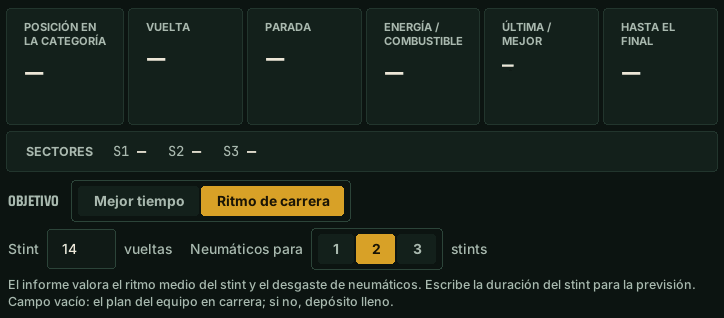
NUEVOInforme de conducción: tarjeta «Desde la última vez» (comparación con la salida anterior o elegida en este circuito con este coche), «Pregunta sobre este informe» (también por voz: «¿qué dice el informe?»), filtro de circuito y coche, «Borrar informe», descripciones más simples en «Próximo stint».
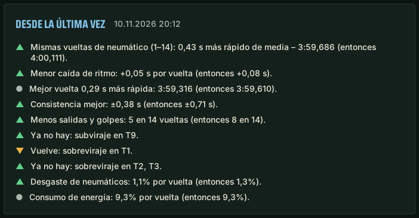
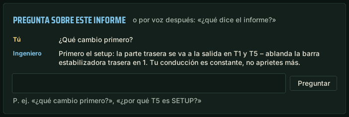
NUEVO«Novedades» en la ventana y en el Pit Wall: capturas de las funciones nuevas – ves dónde están y cómo se ven.
NUEVOStint largo: pregunta «¿cómo cuidar los neumáticos?» – el ingeniero da reglas con tus datos; con el objetivo «Ritmo de carrera» ya no compara curvas con la mejor vuelta.
NUEVORitmo de carrera (función experimental): duración del stint y neumáticos para 1–3 stints (página Ingeniero o por voz) – el informe calcula la caída de ritmo y una previsión para el juego de neumáticos.
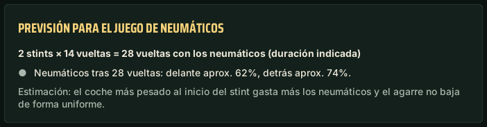
CORRECCIÓNInforme de conducción: «Consistencia» (también en el Pit Wall), una frase en vez de repeticiones para el mismo problema del coche, comparaciones solo entre salidas parecidas, consejos en el idioma del programa, «resumen del stint» actualiza el informe en directo.
CORRECCIÓNIA: peticiones más cortas a Groq – menos «límite alcanzado»; el ingeniero dice si es el límite por minuto o el diario.
CORRECCIÓNAssetto Corsa: consejos de setup de la IA más precisos (amortiguadores, golpes contra el suelo, altura, caída, frenos).
CORRECCIÓNAviso de actualización: lista de cambios en el idioma del programa.
CORRECCIÓNEl consejo de presiones al cambiar la temperatura de pista (noche, mañana) vuelve a funcionar.
Versión 0.4.3.36 (12.11.2026)
NUEVOInforme de conducción: botón para comparar tu vuelta con un compañero en el Pit Wall.
CORRECCIÓNEl mapa del circuito vuelve a recoger la forma exacta de la pista y la envía al equipo.
CORRECCIÓN«¿Qué distancia?» – distancia al coche de delante y de detrás (fuera de carrera: tiempos por vuelta), sin preguntar a la IA.
Versión 0.4.3.35 (11.11.2026)
NUEVOInforme de conducción en la demo: tarjeta con lo que la versión completa mostraría de esta tanda.
NUEVO«¿Cómo hice el sector morado?» – qué salió mejor de lo normal en tu mejor sector o vuelta.
CORRECCIÓNMicrófono: si enciendes los auriculares después de abrir el programa, el ingeniero cambia solo desde el micrófono del portátil.
CORRECCIÓNInforme de conducción: nombres de chicanas correctos en los consejos de reglaje, sin repeticiones.
Versión 0.4.3.34 (11.11.2026)
NUEVOAviso cuando cambias un ajuste en el garaje al revés que el consejo.
CORRECCIÓNLos consejos de reglaje ya no se repiten en círculo.
Versión 0.4.3.33 (11.11.2026)
NUEVOPit Wall: forma exacta del circuito (cada 4 m) del primer piloto del equipo que da una vuelta.
Versión 0.4.3.32 (11.11.2026)
NUEVOEquipo: los mismos números de curva para todos los pilotos, en el Pit Wall y en los informes.
CORRECCIÓNMapa del informe: forma exacta del circuito según tu coche (las chicanas ya no salen rectas), el punto va 2 veces más lento.
CORRECCIÓNInforme de conducción: PS / NS y SETUP también con menos de 4 vueltas limpias.
CORRECCIÓNInforme de conducción: sin «gas antes» cuando la salida fue a fondo hasta frenar para la siguiente curva.
CORRECCIÓNInforme de conducción: indica cuántas vueltas limpias faltaron para consejos de reglaje seguros.
CORRECCIÓNInforme de conducción: una sola barra de agarre por fase en el detalle de la curva.
Versión 0.4.3.31 (11.11.2026)
NUEVOInforme de conducción: consejo para cada fase de la curva (entrar más rápido, más gas o en el límite).
NUEVOInforme de conducción: una chicana cuenta como una sola curva.
NUEVOEntrenador: soltar el freno de golpe, frenar dos veces, correcciones de volante y dudas con el gas.
NUEVOEntrenador: con bloqueos repetidos, ejercicio de frenar con menos fuerza.
NUEVOInforme de conducción: cuándo ceder una curva para salir más rápido de la siguiente.
CORRECCIÓNEn clasificación y entrenamientos, el ingeniero avisa de la parada una vuelta antes cuando la energía solo da para una vuelta.
CORRECCIÓNSe avisa de la parada del coche de delante: «Kowalski ha entrado en boxes, P4».
CORRECCIÓNInforme de conducción: el mapa amplía la curva elegida y el punto se mueve con suavidad.
CORRECCIÓNEl informe de conducción sigue el diseño: etiquetas redondeadas, neumáticos y gráfico.
CORRECCIÓNLa primera vuelta de carrera cuenta en el informe y en el consumo.
CORRECCIÓNNeumáticos en el informe: el borde indica sobrecalentamiento, no el desgaste más rápido.
CORRECCIÓNVoz polaca: posiciones dichas con palabras.
CORRECCIÓNUn quiebro de recta tomado a fondo, con agarre de sobra, ya no cuenta como curva.
Versión 0.4.3.30 (11.11.2026)
NUEVOConsejos para calentar y enfriar los neumáticos.
NUEVOAviso de neumáticos sobrecalentados durante la conducción.
NUEVODuelo con un rival: «vigila a García».
CORRECCIÓNLas preguntas «para que la trasera deslice menos» reciben un consejo de balance.
CORRECCIÓN«Los frenos se sobrecalientan»: respuesta sobre los frenos con consejo, no sobre el motor.
Versión 0.4.3.29 (10.11.2026)
CORRECCIÓNEl spotter en LMU reacciona más rápido (datos de telemetría).
Versión 0.4.3.28 (10.11.2026)
NUEVO«¿Qué ha pasado en T5?»: el último paso comparado con el mejor.
NUEVONotas de voz («nota: …») en el informe de conducción.
NUEVO«¿Dónde está García en pista?»: la curva en la que está el rival.
NUEVOPit wall: aspecto más parecido al programa.
CORRECCIÓNLas órdenes de la lista funcionan en cada idioma sin clave Groq.
CORRECCIÓNSin clave Groq el ingeniero ya no responde en polaco en otros idiomas.
CORRECCIÓNInforme: «Cambia en el setup» solo tiene cambios en el coche.
CORRECCIÓNLa diferencia con un rival en carrera coincide con la que muestra el juego.
CORRECCIÓN«¿Me alcanzará?»: ritmo del rival correcto.
CORRECCIÓNPit wall: «AHORA» ya no tapa el stint, el horario cabe en el móvil.
CORRECCIÓN«Delantero izquierdo 140», «¿TC?» y «¿ABS?» funcionan sin IA.
Novità
Modifiche nelle ultime versioni di Pit Wall Crew.
Versione 0.4.3.37 (12.11.2026)
NUOVOObiettivo: «Miglior tempo» o «Passo gara» (endurance, funzione sperimentale) – il report dà consigli per il giro migliore o per il passo medio e l'usura gomme; selettore nella pagina Ingegnere e a voce.
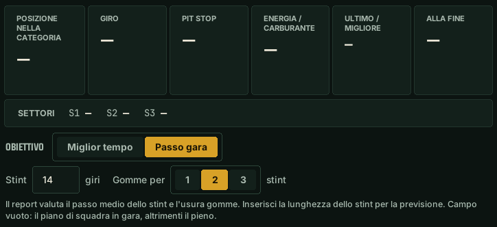
NUOVOReport di guida: scheda «Dall'ultima volta» (confronto con l'uscita precedente o scelta su questa pista con questa macchina), «Chiedi di questo report» (anche a voce: «cosa dice il report?»), filtro pista e macchina, «Elimina report», descrizioni più semplici in «Prossimo stint».
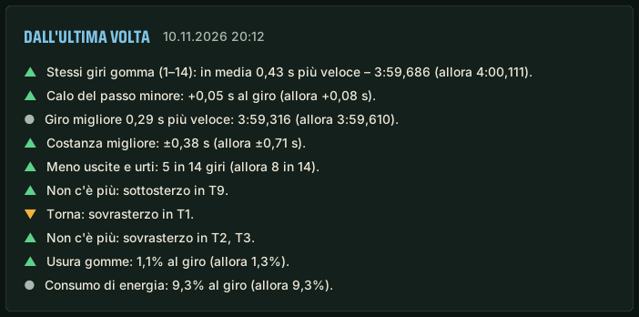
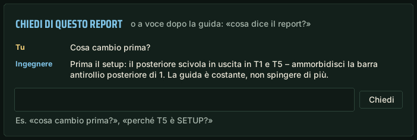
NUOVO«Novità» nella finestra e sul Pit Wall: screenshot delle nuove funzioni – vedi dove sono e come appaiono.
NUOVOStint lungo: chiedi «come risparmiare le gomme?» – l'ingegnere dà le regole dai tuoi dati; con l'obiettivo «Passo gara» non confronta più le curve con il giro migliore.
NUOVOPasso gara (funzione sperimentale): lunghezza dello stint e gomme per 1–3 stint (pagina Ingegnere o a voce) – il report calcola il calo del passo e una previsione per il treno di gomme.
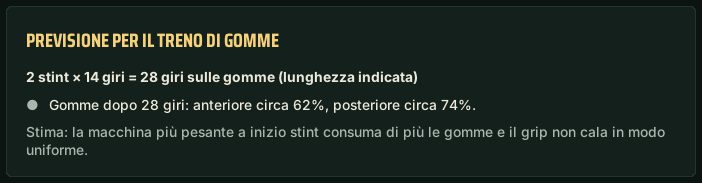
CORREZIONEReport di guida: dicitura «Costanza» ovunque (anche sul Pit Wall), una frase invece di ripetizioni per lo stesso difetto della macchina, confronti solo tra uscite simili, consigli nella lingua del programma, «riepilogo dello stint» aggiorna il report dal vivo.
CORREZIONEIA: richieste più brevi a Groq – meno «limite raggiunto»; l’ingegnere dice se è il limite al minuto o quello giornaliero.
CORREZIONEAssetto Corsa: consigli di assetto dell’IA più precisi (ammortizzatori, talonamento, altezza da terra, camber, freni).
CORREZIONEAvviso di aggiornamento: elenco delle modifiche nella lingua del programma.
CORREZIONEIl consiglio sulle pressioni al cambio di temperatura della pista (notte, mattina) funziona di nuovo.
Versione 0.4.3.36 (12.11.2026)
NUOVORapporto di guida: pulsante per confrontare il tuo giro con un compagno sul Pit Wall.
CORREZIONELa mappa del circuito torna a raccogliere la forma precisa della pista e a inviarla alla squadra.
CORREZIONE«Che distacco?» – distacco dall’auto davanti e dietro (fuori gara: tempi sul giro), senza chiedere all’IA.
Versione 0.4.3.35 (11.11.2026)
NUOVORapporto di guida nella demo: una scheda con ciò che la versione completa mostrerebbe da questa guida.
NUOVO«Come ho fatto il settore viola?» – cosa è andato meglio del solito nel settore o giro migliore.
CORREZIONEMicrofono: se accendi le cuffie dopo l’avvio, l’ingegnere passa da solo dal microfono del portatile.
CORREZIONERapporto di guida: nomi delle chicane corretti nei consigli di assetto, senza ripetizioni.
Versione 0.4.3.34 (11.11.2026)
NUOVOAvviso quando cambi un'impostazione ai box al contrario del consiglio.
CORREZIONEI consigli di assetto non girano più in tondo.
Versione 0.4.3.33 (11.11.2026)
NUOVOPit Wall: forma esatta della pista (ogni 4 m) dal primo pilota della squadra che la percorre.
Versione 0.4.3.32 (11.11.2026)
NUOVOSquadra: stessi numeri di curva per tutti i piloti – sul Pit Wall e nei rapporti.
CORREZIONEMappa del rapporto: forma esatta della pista dalla tua auto (le chicane non sono più dritte), il punto va 2 volte più lento.
CORREZIONERapporto di guida: PS / NS e ASSETTO anche con meno di 4 giri puliti.
CORREZIONERapporto di guida: niente «gas prima» quando l’uscita era in pieno fino alla frenata per la curva successiva.
CORREZIONERapporto di guida: indica quanti giri puliti mancavano per consigli di assetto sicuri.
CORREZIONERapporto di guida: una sola barra di aderenza per fase nei dettagli della curva.
Versione 0.4.3.31 (11.11.2026)
NUOVORapporto di guida: consiglio per ogni fase della curva (entrare più veloce, più gas o al limite).
NUOVORapporto di guida: una chicane conta come una sola curva.
NUOVOCoach: freno rilasciato di colpo, doppia frenata, correzioni di sterzo ed esitazione sul gas.
NUOVOCoach: con bloccaggi ripetuti – esercizio di frenata con meno forza.
NUOVORapporto di guida: quando cedere una curva per uscire più veloce dalla successiva.
CORREZIONEIn qualifica e nelle prove l’ingegnere chiama il pit stop un giro prima quando l’energia basta solo per un giro.
CORREZIONEViene annunciato il pit stop dell’auto davanti: «Kowalski è rientrato ai box, P4».
CORREZIONERapporto di guida: la mappa ingrandisce la curva scelta e il punto si muove in modo fluido.
CORREZIONEIl rapporto di guida segue il progetto: etichette arrotondate, gomme e grafico.
CORREZIONEIl primo giro di gara conta nel rapporto e nei consumi.
CORREZIONEGomme nel rapporto: il bordo indica surriscaldamento, non l’usura più rapida.
CORREZIONEVoce polacca: posizioni pronunciate a parole.
CORREZIONEUna piega del rettilineo fatta in pieno, con aderenza in avanzo, non conta più come curva.
Versione 0.4.3.30 (11.11.2026)
NUOVOConsigli per scaldare e raffreddare le gomme.
NUOVOAvviso di gomme surriscaldate durante la guida.
NUOVODuello con un rivale: «tieni d'occhio Rossi».
CORREZIONELe domande «perché il posteriore scivoli meno» ricevono un consiglio sul bilanciamento.
CORREZIONE«I freni si surriscaldano»: risposta sui freni con un consiglio, non sul motore.
Versione 0.4.3.29 (10.11.2026)
CORREZIONELo spotter in LMU reagisce più in fretta (dati di telemetria).
Versione 0.4.3.28 (10.11.2026)
NUOVO«Cos'è successo in T5?»: l'ultimo passaggio confrontato con il migliore.
NUOVONote vocali («nota: …») nel rapporto di guida.
NUOVO«Dov'è Rossi in pista?»: la curva in cui si trova il rivale.
NUOVOPit wall: aspetto più vicino al programma.
CORREZIONEI comandi dell'elenco funzionano in ogni lingua senza chiave Groq.
CORREZIONESenza chiave Groq l'ingegnere non risponde più in polacco nelle altre lingue.
CORREZIONERapporto: «Cambia nell'assetto» contiene solo modifiche all'auto.
CORREZIONEIl distacco da un rivale in gara coincide con quello mostrato dal gioco.
CORREZIONE«Mi prende?»: passo del rivale corretto.
CORREZIONEPit wall: «ADESSO» non copre più lo stint, il programma sta sul telefono.
CORREZIONE«Anteriore sinistra 140», «TC?» e «ABS?» funzionano senza IA.
Nyheder
Ændringer i de seneste versioner af Pit Wall Crew.
Version 0.4.3.37 (12.11.2026)
NYKøremål: »Bedste tid« eller »Løbstempo« (endurance, eksperimentel funktion) – rapporten giver råd til bedste omgang eller til gennemsnitstempo og dækslid; kontakt på siden Ingeniør og med stemmen.
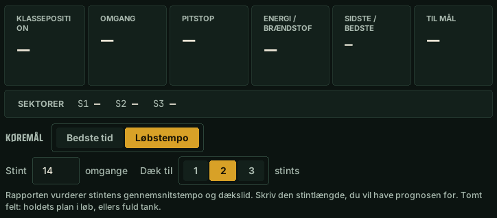
NYKørselsrapport: kortet »Siden sidst« (sammenligning med forrige eller en valgt tur på denne bane i denne bil), »Spørg om denne rapport« (også med stemmen: »hvad siger rapporten?«), filter for bane og bil, »Slet rapport«, enklere tekster under »Næste stint«.
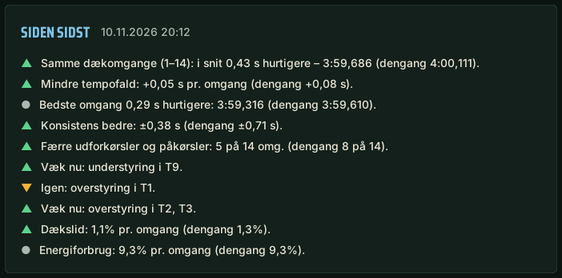
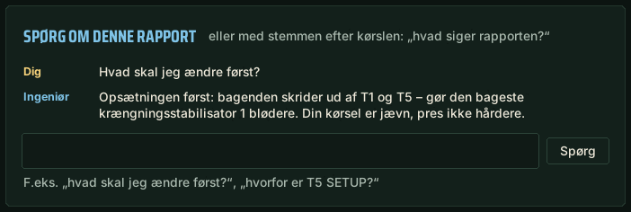
NY»Nyheder« i vinduet og på Pit Wall: skærmbilleder af nye funktioner – du ser, hvor de er, og hvordan de ser ud.
NYLang stint: spørg »hvordan sparer jeg på dækkene?« – ingeniøren giver regler ud fra dine data; med målet »Løbstempo« sammenligner den ikke længere sving med bedste omgang.
NYLøbstempo (eksperimentel funktion): stintlængde og dæk til 1–3 stints (siden Ingeniør eller med stemmen) – rapporten beregner tempofald og en prognose for dæksættet.
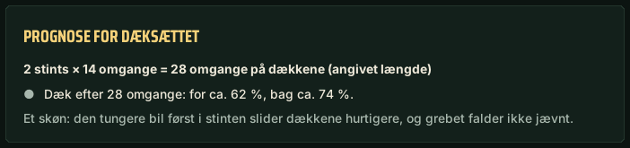
RETTELSEKørselsrapport: »Konsistens« (også på Pit Wall), én sætning i stedet for gentagelser ved samme bilproblem, sammenligninger kun mellem lignende ture, råd på programmets sprog, »stint-opsummering« opdaterer live-rapporten.
RETTELSEAI: kortere forespørgsler til Groq – sjældnere »grænse nået«; ingeniøren siger, om det er grænsen pr. minut eller pr. dag.
RETTELSEAssetto Corsa: mere præcise AI-råd om opsætning (støddæmpere, bundslag, frihøjde, camber, bremser).
RETTELSEOpdateringsvindue: ændringslisten på programmets sprog.
RETTELSETrykrådet ved ændret banetemperatur (nat, morgen) virker igen.
Version 0.4.3.36 (12.11.2026)
NYKørselsrapport: knap til at sammenligne din tur med en holdkammerat på Pit Wall.
RETTELSEBanekortet samler igen banens præcise form og sender den til holdet.
RETTELSE»Hvad er afstanden?« – afstand til bilen foran og bagved (uden for løbet: omgangstider) uden at spørge AI.
Version 0.4.3.35 (11.11.2026)
NYKørselsrapport i demo: et kort med, hvad den fulde version ville vise fra denne kørsel.
NY»Hvordan kørte jeg den lilla sektor?« – hvad der gik bedre end normalt i din bedste sektor eller omgang.
RETTELSEMikrofon: tænder du headsettet efter start, skifter ingeniøren selv fra laptopens mikrofon.
RETTELSEKørselsrapport: korrekte chikanenavne i opsætningsråd, uden gentagelser.
Version 0.4.3.34 (11.11.2026)
NYAdvarsel, når du ændrer en indstilling i garagen modsat rådet.
RETTELSEOpsætningsråd gentager sig ikke længere i ring.
Version 0.4.3.33 (11.11.2026)
NYPit Wall: præcis baneform (hver 4. m) fra den første teamkører, der kører banen.
Version 0.4.3.32 (11.11.2026)
NYTeam: samme svingnumre for alle kørere – på Pit Wall og i rapporterne.
RETTELSEKort i rapporten: præcis baneform fra din bil (chikaner er ikke længere lige), prikken kører halvt så hurtigt.
RETTELSEKørselsrapport: PS / NS og OPSÆTNING vises også med færre end 4 rene omgange.
RETTELSEKørselsrapport: intet „tidligere gas“, når udkørslen var fuld gas helt til opbremsningen til næste sving.
RETTELSEKørselsrapport: viser, hvor mange rene omgange der manglede til sikre opsætningsråd.
RETTELSEKørselsrapport: én grebsbjælke pr. fase i svingdetaljerne.
Version 0.4.3.31 (11.11.2026)
NYKørselsrapport: råd til hver fase af svinget (hurtigere ind, mere gas eller ved grænsen).
NYKørselsrapport: en chikane tæller som ét sving.
NYCoach: brat slip af bremsen, to opbremsninger, ratkorrektioner og tøven på speederen.
NYCoach: ved gentagne blokeringer – øvelse i at bremse med mindre kraft.
NYKørselsrapport: hvornår du giver et sving for at komme hurtigere ud af det næste.
RETTELSEI kvalifikation og træning melder ingeniøren pitstop en omgang tidligere, når energien kun rækker til én omgang.
RETTELSEPitstop for bilen foran meldes: „Kowalski er gået i pit, P4“.
RETTELSEKørselsrapport: kortet zoomer ind på det valgte sving, og prikken bevæger sig jævnt.
RETTELSEKørselsrapporten følger designet: afrundede mærker, dæk og diagram.
RETTELSEFørste løbsomgang tæller i rapporten og forbruget.
RETTELSEDæk i rapporten: rammen betyder overophedning, ikke hurtigste slid.
RETTELSEPolsk stemme: positioner læses som ord.
RETTELSEEt knæk på langsiden taget fuld gas, med greb til overs, tæller ikke længere som et sving.
Version 0.4.3.30 (11.11.2026)
NYRåd om at varme og køle dækkene.
NYAdvarsel om for varme dæk under kørslen.
NYDuel med en rival: »hold øje med Jensen«.
RETTELSESpørgsmål som »så bagenden glider mindre« får et råd om balancen.
RETTELSE»Bremserne bliver for varme« – svar om bremserne med et råd, ikke om motoren.
Version 0.4.3.29 (10.11.2026)
RETTELSESpotteren i LMU reagerer hurtigere (telemetridata).
Version 0.4.3.28 (10.11.2026)
NY»Hvad skete der i T5?« – seneste gennemkørsel mod den bedste.
NYStemmenoter (»note: …«) i kørselsrapporten.
NY»Hvor på banen er Jensen?« – svinget, rivalen er i.
NYPit wall: udseende tættere på programmet.
RETTELSEKommandoer fra listen virker på alle sprog uden Groq-nøgle.
RETTELSEUden Groq-nøgle svarer ingeniøren ikke længere på polsk på andre sprog.
RETTELSERapport: »Ændr i opsætningen« har kun ændringer på bilen.
RETTELSEAfstanden til en rival i løb svarer til den, spillet viser.
RETTELSE»Indhenter han mig?« – korrekt tempo for rivalen.
RETTELSEPit wall: »NU« dækker ikke længere stintet, planen passer på telefonen.
RETTELSE»Venstre for 140«, »TC?« og »ABS?« virker uden AI.